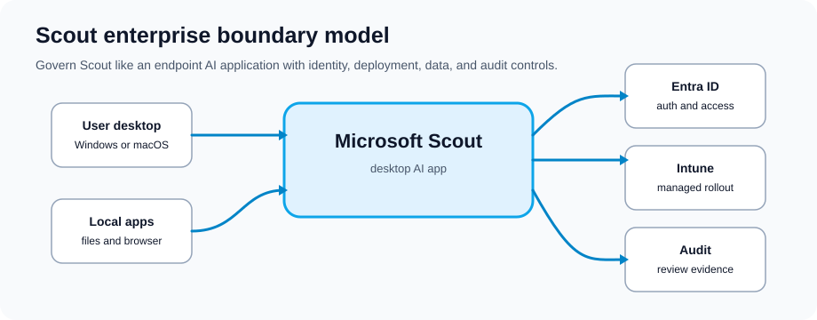
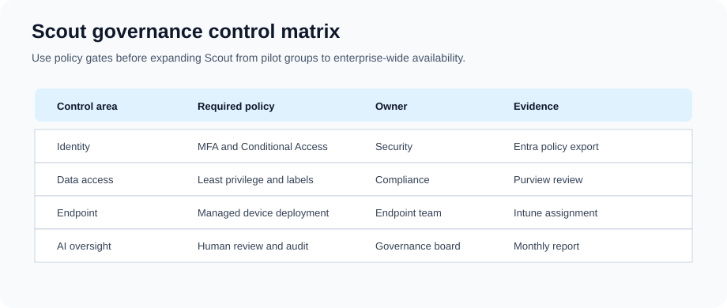
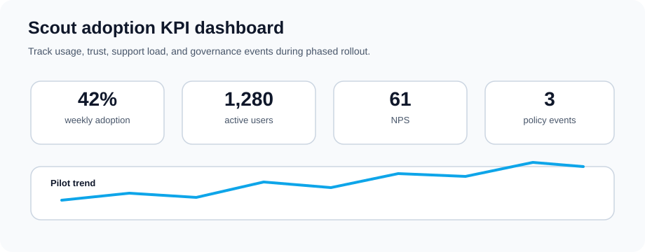

Microsoft Scout is a Frontier preview desktop app for Windows and macOS. Microsoft describes it as an AI app that can work with approved local files, shell commands, browser automation, and Microsoft 365 data, with approval prompts for sensitive actions.
That mix of local and cloud access is useful, but it also deserves a careful pilot. Before a broad rollout, define the managed devices, workspace folders, permission levels, preview eligibility, and user guidance.

Microsoft documents Scout as Frontier prerelease functionality. Treat the first rollout as a controlled pilot, not a normal app deployment.
Where Scout Can Help
Day-to-Day Work
Fewer context switches: Scout can work across a local workspace, browser, and Microsoft 365 in one task flow
Recurring work: Scheduled or condition-triggered automations can help with repeat tasks after review
Preparation: Users can ask Scout to draft documents, summarize context, update files, or prepare follow-ups
Parallel work: Scout can delegate complex tasks to specialized sub-agents when that capability is allowed
Team Benefits
Repeatable patterns: Teams can turn approved prompts, automations, and custom skills into shared examples
Faster onboarding: New employees can start from known-good task examples instead of guessing
Less searching: Scout can help users find and summarize information they already have permission to access
Better rollout feedback: Pilot tickets and user feedback show where training or guardrails need work
Employee Satisfaction
Reduced email overload and meeting fatigue
More time for work that needs judgment instead of repetitive admin
Improved work-life balance through automation
Career development through AI-suggested learning opportunities
Data Handling: Validate Microsoft 365 data protection, preview terms, and model/subprocessor behavior with legal and security teams
Compliance Alignments
Map Scout use to the rules that already apply to your tenant and industry:
GDPR privacy notices, lawful basis, retention, and subject-rights processes
HIPAA or healthcare controls if Scout is allowed near PHI-related workflows
Sovereign cloud and government requirements where preview availability is permitted
SOC 2 and internal audit evidence for identity, logging, change, and incident controls

Control checklist: identity, data access, endpoint controls, and AI review points
Security Controls
Multi-Factor Authentication: Enforce for all users with Scout access
Conditional Access: Restrict Scout to corporate networks or approved VPNs
Audit Logging: Enable comprehensive audit logs for all Scout actions
Threat Detection: Use Microsoft 365 threat protection to monitor anomalies
Sensitive Data Handling
Scout should inherit existing Microsoft 365 access boundaries for cloud data
Use sensitivity labels, DLP, and information barriers to reduce exposure before pilot users start
Mark local sensitive directories so access requires explicit approval
Test regulated-data scenarios in the pilot before permitting production use
Deployment and Rollout
Prerequisites
Frontier preview eligibility and accepted preview participation terms
Supported Windows or macOS endpoint managed through your enterprise device process
Microsoft 365 identity, Teams, Exchange, SharePoint, and OneDrive access for approved scenarios
Microsoft Entra ID tenant with modern authentication and Conditional Access policies
Enabling Scout for Pilot Users
Validate Frontier preview access and Scout admin prerequisites
Deploy Scout with Microsoft Intune or your approved endpoint-management process
Restrict rollout to a pilot group while support and security teams monitor behavior
Configure permission policies for file, shell, browser, and Microsoft 365 access
Review audit, retention, and support processes before expanding access
Configuring Security and Compliance
Set Conditional Access policies for Scout usage
Create custom sensitivity labels if needed
Configure DLP rules for regulated content types
Enable audit log search for Scout activities
Configure retention policies for Scout interaction logs
User Enablement
Create communication plan explaining Scout benefits and privacy
Publish Scout quick-start guides per application (Teams, Outlook, Word)
Record video tutorials for common use cases
Set up help desk ticketing category for Scout issues
Conduct optional training sessions for interested users
Pilot Program Setup
Create Azure AD security group for pilot participants
Use conditional access to restrict Scout to pilot group initially
Assign a pilot program manager to coordinate feedback
Schedule weekly check-ins with pilot participants
Document lessons learned for expansion phases
Monitoring and Tuning
Key Metrics to Track
Adoption Rate: % of licensed users actively using Scout weekly
Feature Usage: Which Scout features used most (suggestions, summaries, automation)
User Satisfaction: NPS score and qualitative feedback from surveys
Support Tickets: Issues reported and resolution time
Compliance Events: Policy violations or security incidents detected

KPI Dashboard: Adoption rate, feature usage, NPS, and compliance tracking
Audit Logging and Monitoring
Review available Scout, endpoint, Microsoft 365, and Entra logs during the pilot
Create alerts for suspicious patterns such as unusual file access, risky commands, or off-hours automation
Hold monthly security reviews while Scout remains in preview
Retain Scout-related evidence according to organizational retention policies
Continuous Improvement
Monthly reviews: Look at adoption, support issues, and risky behavior patterns
Quarterly training: Run deeper sessions based on the questions users are actually asking
Feature expansion: Add features gradually, not all at once
Integration plan: Connect Scout to business applications only after the core pilot is stable
Sample Policy Language
Sample Scout Acceptable Use Policy
Purpose: Set clear rules for safe Microsoft Scout use during pilot and production rollout.
Scope: All employees and contractors with Microsoft Scout access.
Scout can assist with work-related tasks within Microsoft 365 applications
Scout should not process personal or non-business information
Users should not attempt to bypass security or data loss prevention policies
Scout interactions are subject to organizational audit and monitoring
Data Handling Requirements
Scout respects all existing access controls and permissions
Information Scout processes follows the same classification as source documents
Regulated data (PII, PHI, financial) is excluded from Scout analysis by default
Users may not export Scout-generated content outside Microsoft 365
Escalation and Incident Response
Scout policy violations reported to Security team immediately
Suspected data breaches involving Scout require formal incident response
Users violating Scout policies subject to disciplinary action
Scout access may be disabled for non-compliant users pending investigation
Frequently Asked Questions
Is Scout always monitoring my work?
Scout activates when you ask it for help or when it detects it can provide proactive assistance. It doesn't passively monitor all your activities by default.
Can I opt out of Scout?
Admins should control deployment through preview access, endpoint management, and permission policy. User-level opt-out behavior can change while Scout remains prerelease, so validate it during pilot planning.
Does Scout work offline?
No, Scout requires internet connectivity and Microsoft 365 cloud services. It doesn't work with locally cached or offline content.
What happens to Scout data if I leave the company?
Retention depends on the workspace files, Microsoft 365 data, logs, and preview policies involved. Document offboarding and cleanup steps for Scout workspaces before production use.
Can Scout access my email archives?
Scout can work with Microsoft 365 data that the signed-in user is authorized to access. Test archive, retention, and deleted-item scenarios before relying on them in production workflows.
Is there an additional cost for Scout?
Microsoft labels Scout as Frontier preview functionality, so licensing and packaging can change. Validate preview terms, Microsoft Product Terms, and your account-team guidance before rollout.
How does Scout handle multi-tenant scenarios?
Scout only operates within your licensed tenant. It cannot access content from other organizations or shared multi-tenant environments.
Official Microsoft references
Microsoft labels Scout documentation as prerelease/Frontier content, so check preview eligibility, admin access, and change-review steps before expanding beyond a pilot.
Microsoft Scout overview — official description of Scout as a desktop AI application for Windows and macOS that takes action across files, shell, browser, and Microsoft 365 data.